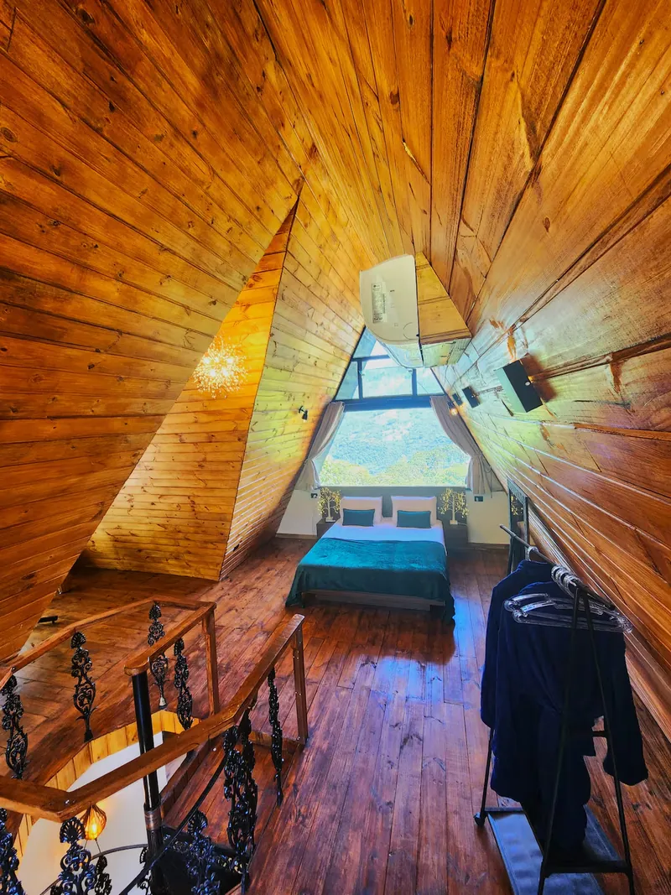
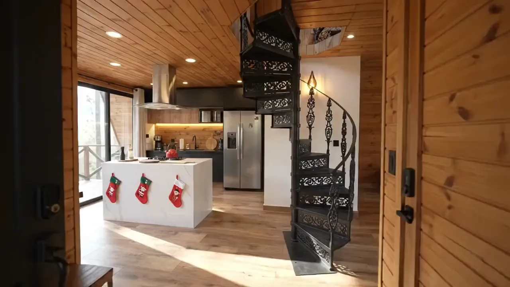
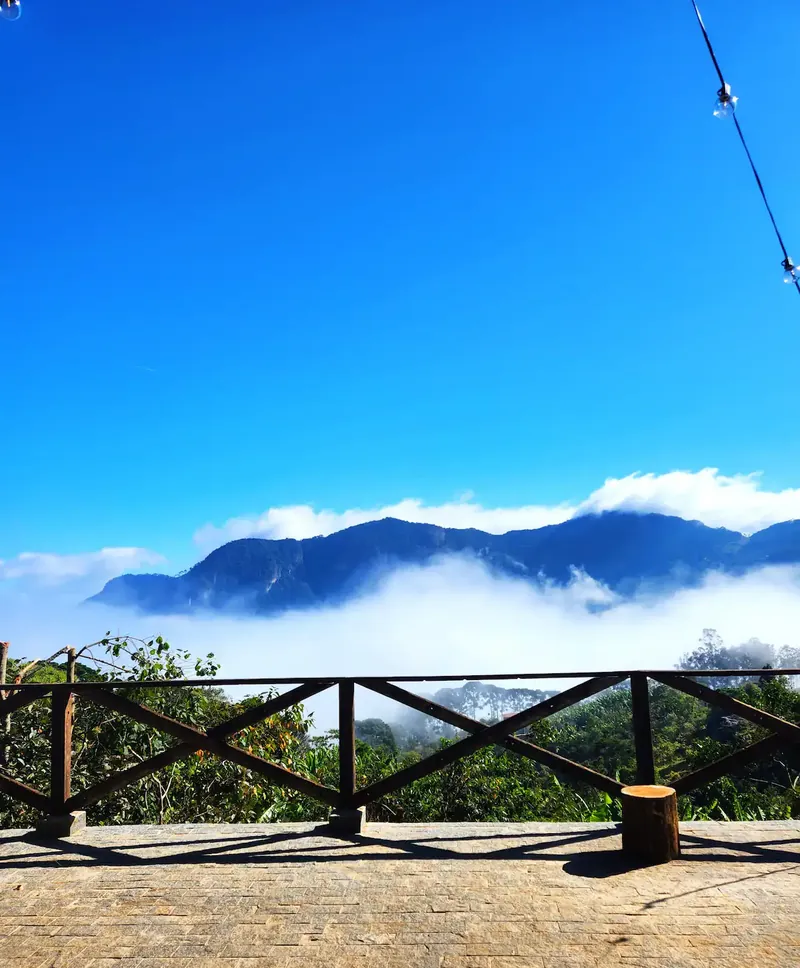
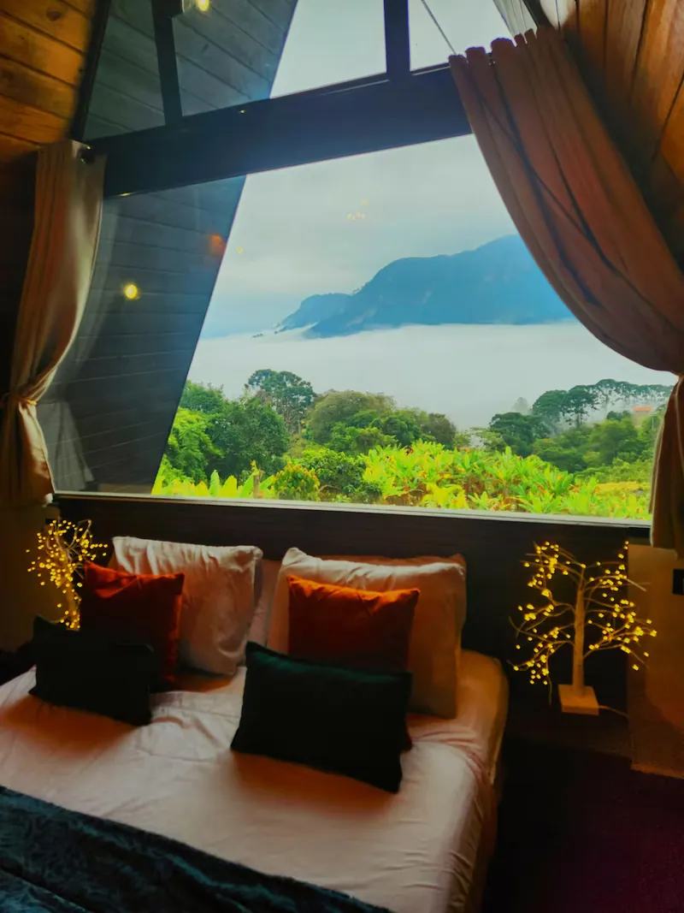
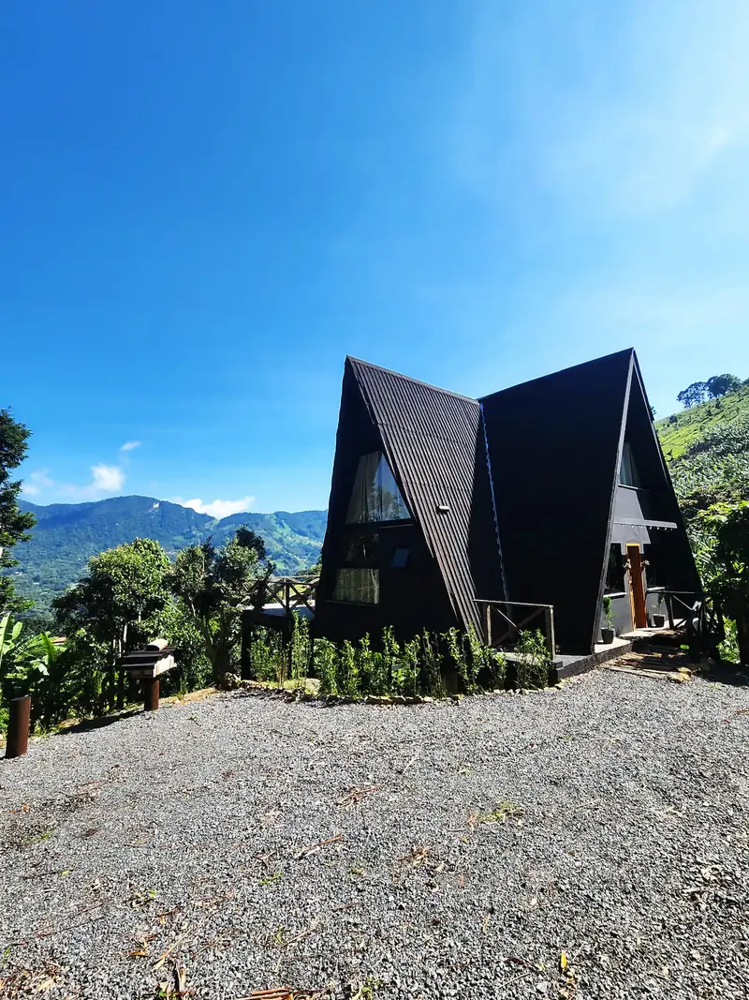
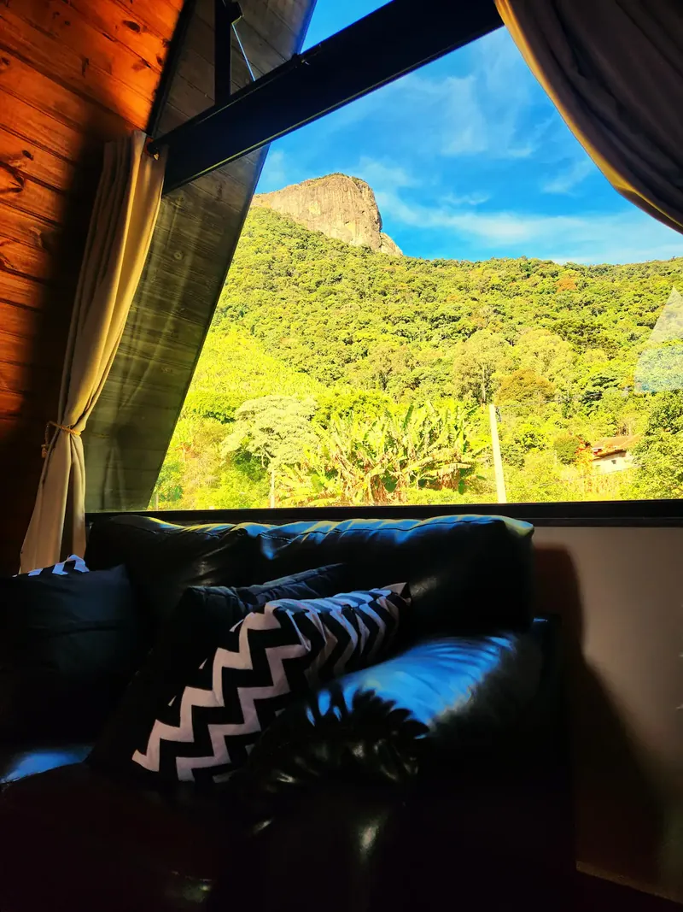

O quarto, sob o telhado
Cama queen diante da janela da empena, aberta para o verde. Chega-se a ele pela escada caracol de ferro trabalhado.

Filme feito a partir de fotografias da cabana — sem som, cerca de 10 segundos: cozinha, sala, mesa, calefator e banheira.
Cabana do Barão São Bento do Sapucaí, SP · região da Pedra do Baú
Cabana para duas pessoas no bairro Paiol Grande, com banheira de hidromassagem, calefator a lenha e a serra nas janelas.
I A vista
Do terraço, da cama e da banheira, a serra entra em cena. Em algumas manhãs, a neblina cobre o vale e deixa à vista só o desenho das montanhas.
A cabana fica a cerca de 1.300 m de altitude, segundo o anfitrião.


II A cabana
Dois volumes triangulares de fachada preta, madeira por dentro e janelas que enquadram a paisagem. O quarto fica no alto, sob o telhado, com acesso por uma escada caracol.


Cama queen diante da janela da empena, aberta para o verde. Chega-se a ele pela escada caracol de ferro trabalhado.

O sofá fica de frente para a mata e para o paredão de pedra. A paisagem faz parte do ambiente.
Listadas na Booking e na descrição do anfitrião no Airbnb, consultadas em 06/10/2026.
Consulte disponibilidade e valores para as suas datas.
III Fotos
Doze fotografias. Toque em uma foto para ampliar.
Enfeites que aparecem em algumas fotos e no vídeo — como árvore de Natal, balões e pétalas — não fazem parte da descrição da hospedagem.
IV Momentos
A hidromassagem fica junto às janelas. Na foto, uma delas está aberta para o deck e para a serra.
O calefator a lenha aquece o ambiente da banheira e da sala. Do lado de fora, o anfitrião descreve churrasqueira e fire pit.
Arandelas de luz quente sobre a madeira e uma cadeira suspensa junto à janela triangular.
Consulte disponibilidade e valores para as suas datas.
V Destino
A cabana fica no bairro Paiol Grande, em São Bento do Sapucaí, no lado paulista da Serra da Mantiqueira — a região do complexo da Pedra do Baú.
Formado pela Pedra do Baú, pelo Bauzinho e pela Ana Chata, o complexo é protegido desde 2010 como Monumento Natural Estadual, com cerca de 3,1 mil hectares, sob gestão da Fundação Florestal em parceria com a prefeitura.
A região é procurada para trilhas, escalada e voo livre. Antes de planejar um passeio, confira as regras de visitação e contrate guia quando for necessário.
Fontes: Decreto estadual nº 56.613/2010 e Assembleia Legislativa de São Paulo.
VI Hóspedes
4,98/5
Airbnb · 118 avaliações
Ler no Airbnb9,8/10
Booking.com · 13 avaliações
Ler na BookingNotas e totais consultados em 06/10/2026; podem ter mudado desde então.
“Ambiente perfeito para quem procura paz e natureza”
Nos comentários publicados aparecem temas como vista, acolhimento, limpeza e conforto.
VII Localização
Bairro Paiol Grande São Bento do Sapucaí, SP Região da Pedra do Baú · Serra da Mantiqueira
Peça o endereço exato e as orientações de chegada ao consultar disponibilidade.
Segundo o anfitrião, o caminho é asfaltado, com trechos íngremes, e a chegada é por um pátio de pedras soltas. Se tiver dúvida sobre o seu veículo, pergunte antes de reservar.
No bairro Paiol Grande, em São Bento do Sapucaí (SP), na região da Pedra do Baú, na Serra da Mantiqueira. O endereço exato pode ser pedido na consulta de disponibilidade.
Duas. São um quarto com cama queen e um banheiro, segundo o anúncio no Airbnb.
Quarto, banheiro, cozinha e varanda, além de banheira de hidromassagem, calefator a lenha, ar-condicionado, Wi-Fi e estacionamento. Do lado de fora, o anfitrião descreve churrasqueira e fire pit.
O anfitrião descreve o caminho como asfaltado, com trechos íngremes, e a chegada por um pátio de pedras soltas. Se tiver dúvida sobre o seu veículo, pergunte na consulta.
As fotos mostram uma escada caracol de ferro que leva ao quarto, no andar de cima. Se alguém do grupo tiver mobilidade reduzida, converse com o anfitrião antes de reservar.
A Booking indica entrada às 15h e saída às 11h. Confirme os horários na consulta: as condições da reserva direta podem ser diferentes.
Essas regras ainda não estão confirmadas nesta página. Pergunte na consulta: as condições da estadia são combinadas diretamente no atendimento.
Árvore de Natal, balões, pétalas e outros enfeites aparecem em algumas fotos e no vídeo, mas não fazem parte da descrição da hospedagem. Se quiser algo do tipo, pergunte na consulta.
No fim da página, informe as datas, se já tiver, e envie a consulta. Valores e reserva são confirmados diretamente no atendimento.
Consulte disponibilidade e valores para as suas datas.
VIII Disponibilidade
Consulte disponibilidade e valores para as suas datas.
O atendimento por WhatsApp ainda está sendo ativado. Enquanto isso, envie esta mensagem pelo Instagram da cabana.